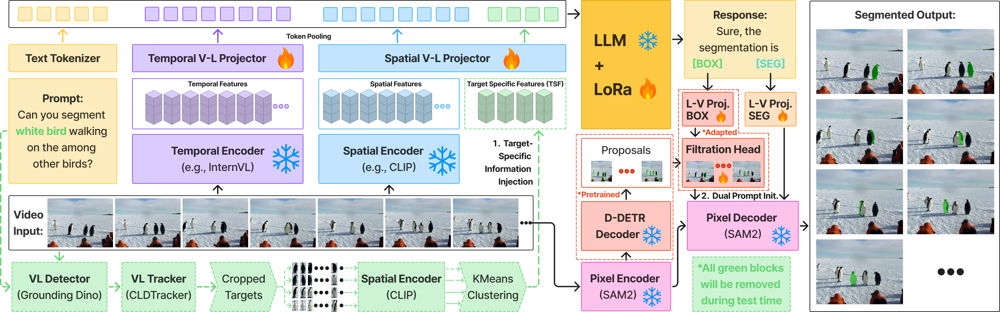

Abstract
Multimodal large language models (MLLMs) have advanced from image-level reasoning to pixel-level
grounding, but extending these capabilities to videos remains challenging as models must achieve
spatial precision and temporally consistent reference tracking. Existing video MLLMs often rely on a
static segmentation token ([SEG]) for frame-wise grounding, which provides semantics
but lacks temporal context, causing spatial drift, identity switches, and unstable initialization
when objects move or reappear. We introduce SPARROW, a pixel-grounded video MLLM that unifies
spatial accuracy and temporal stability through two key components: (i) Target-Specific Tracked
Features (TSF), which inject temporally aligned referent cues during training, and (ii) a
dual-prompt design that decodes box ([BOX]) and segmentation ([SEG]) tokens to fuse geometric priors
with semantic grounding. SPARROW is supported by a curated referential video dataset of 30,646 videos
and
45,231 Q&A
pairs
and operates end-to-end without external detectors via a class-agnostic
SAM2-based proposer. Integrated into three recent open-source video MLLMs (UniPixel, GLUS, and
VideoGLaMM), SPARROW delivers consistent gains across six benchmarks, improving up to +8.9 J&F on RVOS, +5 mIoU on visual grounding, and
+5.4 CLAIR on GCG. Code,
datasets, and models are publicly available.
Methodology

SPARROW pipeline. Given a video and text prompt, spatial and temporal encoders feed
V→L adapters and a LoRA-tuned LLM. The LLM emits [BOX] and [SEG]
tokens which are projected (L→V) to condition a class-agnostic proposer and the SAM2 pixel
decoder. Dashed green modules (GroundingDINO, CLDTracker, target cropping, K-means) are pre-computed
offline as pseudo-supervision, used only for target-specific information injection step,
and are removed at test time by default.
Target-Specific Tracked Features
To enforce temporal referential consistency, we introduce a TSF mechanism that tracks object instances across frames and provides temporally aligned features during training. This allows the model to maintain identity and spatial coherence over time, enabling stable temporal representation learning directly from tracked visual signals, without requiring an external tracker at inference.
Dual-Prompt Initialization
We integrate [BOX] and [SEG] tokens during training and inference to
stabilize geometric and semantic grounding. The [BOX] token provides a coarse
spatial prior by conditioning a lightweight regression head on class-agnostic region proposals.
The [SEG] token refines these regions through language-conditioned semantics to
produce precise masks.